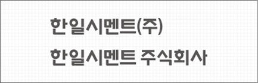
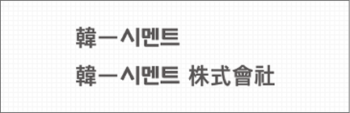

홍보센터
홍보센터
> 홍보센터 > CI&BI
CI&BICI&BI
국가기간산업의 초석이 되고 경제발전에 기여할 한일시멘트의 CI를 소개합니다
한일시멘트의 심볼마크는 우리나라 국토를 추상화한 형태로서 당사의 제품이 전국 삼천리 방방곡곡에 보급되어 국가기간산업의 초석이 되고,
경제발전에 기여하므로써 이루어질 당사의 무궁한 발전을 표상한 것입니다. 직경 4cm미만으로 표시할 때 쓰여지며 서식류 등 인쇄물에 주로 사용됩니다.
상황에 맞는 로고 배리에이션
-

국문 로고타입 · 기본형 -
영문 로고타입 · 해외용 -

한문 로고타입 · 해외용
한일시멘트의 컬러 시스템
브랜드의 신뢰감과 전문성을 나타내는 메인 컬러와, 이를 보완하는 서브 컬러로 구성됩니다.
- Hanil Blue #005BAC
- Deep Blue #003D75
- Navy #0A1830
- Neutral Gray #6B7280
로고 사용 규정
-
01
최소 여백 확보
로고 주변에는 로고 높이의 1/2에 해당하는 여백을 항상 확보해, 다른 요소와 겹치지 않도록 합니다.
-
02
최소 사용 크기 준수
로고의 가독성을 유지하기 위해 지정된 최소 크기 이하로 축소하여 사용하지 않습니다.
-
03
임의 변형 금지
로고의 색상, 비율, 방향을 임의로 변경하거나 그림자·외곽선 등의 효과를 추가하지 않습니다.